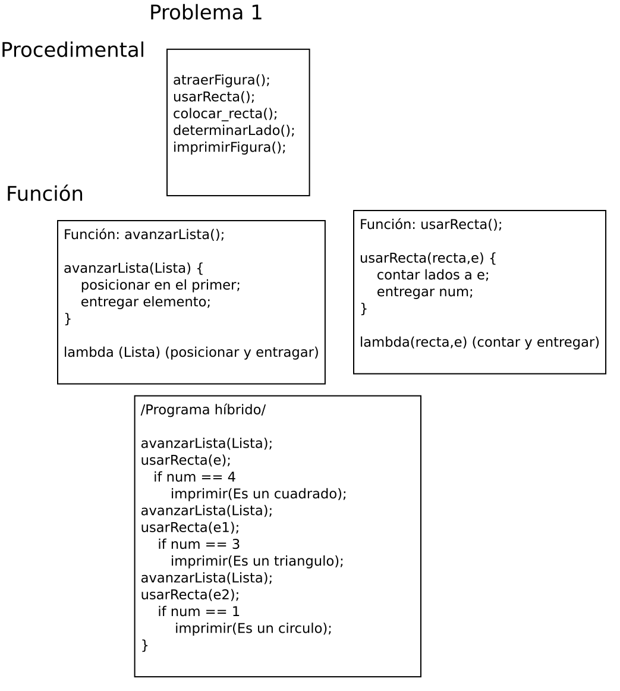
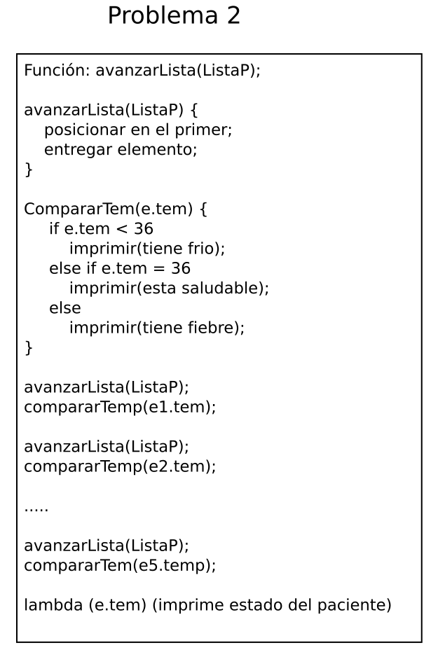
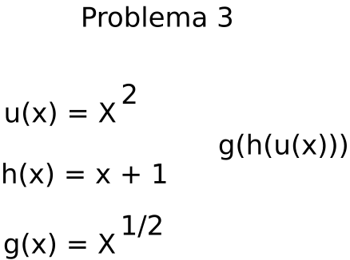
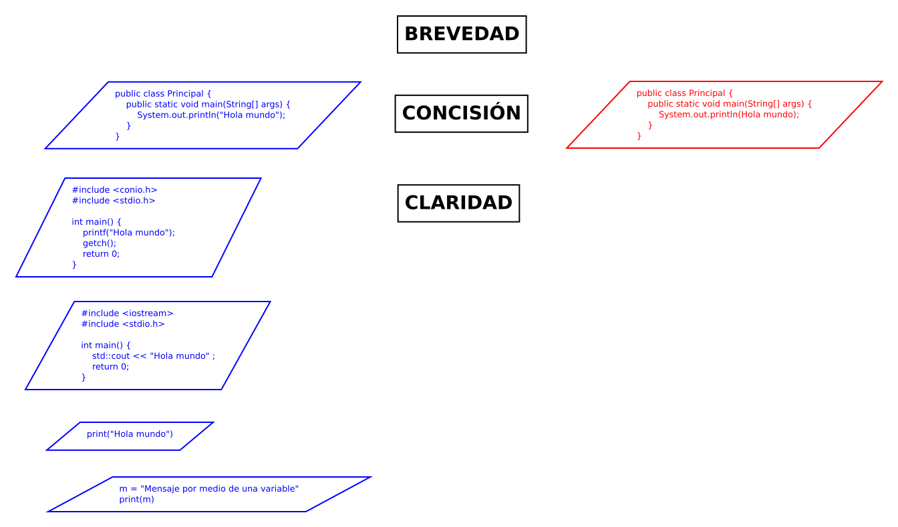

Representación de lambda
El cálculo lambda.
La notación para lambda es la siguiente:
lambda (parámetro) (expresión)
λx.M
lambda (x) (x*x)
cuadrdado(lambda (x) (x*x)) 5
(λx.x*x)5
Problemas
Problema 1: se tienen tres figuras: un cuadrado, un triángulo y un círculo. ¿En que orden estan las figuras? Cambiar el orden.

Problema 2: la temperatura del cuerpo humano es de 36 grados centigrados. Si tenemos una lista de pacientes con temperatura de 40, 30. 39, 38, 36, determinar si tienen calentura o presión baja o esta bien su temperatura.

Problema 3: obtener (x2 + 1)1/2 por medio de composición de funciones. Sea u(x) = x2, h(x) = x + 1, g(x) = x1/2

Problema 4: se tiene la siguiente lista o arreglo [a,b,a,a,a,c,c]. a) Elimina los duplicados ayacentes del segundo en adelante. b) Deja sólo los elementos no repetidos.

Problema 5: implementar el algoritmo de Gauss de la suma de los 100 números.
Problema 6: calcular el promedio de una lista de números.
El lenguaje de programación.
Este es un método exclusivamente humano, y no instintivo, para comunicarse con la computadora por medio de un sistema de símbolos producidos de manera deliberada. Existen varias forma o estilos de codificar las instrucciones que deberá entender la computadora. Entre los cuales esta el estilo estructurado y otro que es el procedimental, entre otros.
El lenguaje, Edward Sapir, página 14, FCE, 2017

Forma de programar estructurada.
Forma de programar procedimental.
El estudio de los lenguajes naturales se hace por medio de la gramática, donde: las palabras que identifican a los objetos se hace con el Léxico, la conexión de las palabras se hace con la Sintaxis, y la interpretación de lo expresado se hace con la Semántica.
Lenguaje de programación. Los programas de computadora son simplemente secuencias de operaciones abstractas escritas en un lenguaje de programación: un lenguaje formal diseñado para expresar cálculo. Los lenguajes de programación tienen propiedades y significados rígidos, como opuesto a los lenguajes naturales, como el chino o el portugués. Los lenguajes de programación están diseñados para la expresividad, la concisión y la claridad. Los lenguajes naturales permiten la ambigüedad. Los lenguajes de programación están diseñados para evitar ambigüedad; un programa ambiguo no tiene sentido. Los lenguajes de programación están diseñados para especificar cálculos, para registrar la secuencia de acciones que realizan alguna tarea o producen algunos resultados.
Investigación de José Sánchez Juárez
Pequeña historia de los lenguajes de programación
Código máquina y lenguaje ensamblador se usaron de 1940 a 1950, el código máquina es una serie de instrucciones binarias, el lenguaje ensamblador se representa con mnemotecnia. La programación procedimental (Fortran, Cobol, C) de 1950 a 1970, esta se enfoca en dividir los programas en programas más pequeños, en procedimientos o funciones reusables, y emfatiza la ejecución secuencial y el control del flujo. La programación orientada a objetos (Smalltalk, C++, Java) de 1980 a 1990, esta introduce conceptos como: encapsulamiento, herencia, y polimorfismo, con lo que se mejora la organización y la reutilización del código. La programación lógica (Prolog) de 1970 a la fecha es una forma de programar con hechos y reglas, este paradigma se usa para IA, y representación del conocimiento. La programación funcional (Lisp, Haskell, JavaScript) del 2000 a la fecha, esta emfatiza la inmutabilidad, funciones puras, y funciones de orden superior, lo que se usa para programación concurrente y paralela.
Programming paradigm, James Allen, 2025
Definición de paradigma
Tomado del diccionario de la Real Academia Española.
2. m. Teoría o conjunto de teorías cuyo núcleo central se acepta sin cuestionar y que suministra la base y modelo para resolver problemas y avanzar en el conocimiento.
3. m. Ling. Relación de elementos que comparten un mismo contexto fonológico, morfológico o sintáctico en función de sus propiedades lingüísticas.
4. m. Ling. Esquema formal en el que se organizan las palabras que admiten modificaciones flexivas o derivativas.
Paradigma de programación
Es la forma fundamental de pensar para escribir y organizar el código. Es una mentalidad. Es como se resuelve un problema, se estructura una solución y como se razona acerca de un sistema. No es un estilo de escribir código.
El paradigma de la programación es una forma de pensar que guia como estructurar y resolver problemas mediante código. Esto te muestra como abordar la solución de un problema: que conceptos, que patrones debes usar, y como debes administrar la complejidad.
Formas de programar.
Programar no es escribir instrucciones para una computadora. Es resolver problemas por medio de estructuras, lógica, e intenciones.
Programming paradigm, Michael Williams, 2025
Paradigmas de programación
El paradigma es un modelo mental o cosmovisión. Es el lente por medio del cual definimos los problemas y construimos los programas.
Programming paradigm, Michael Williams, 2025